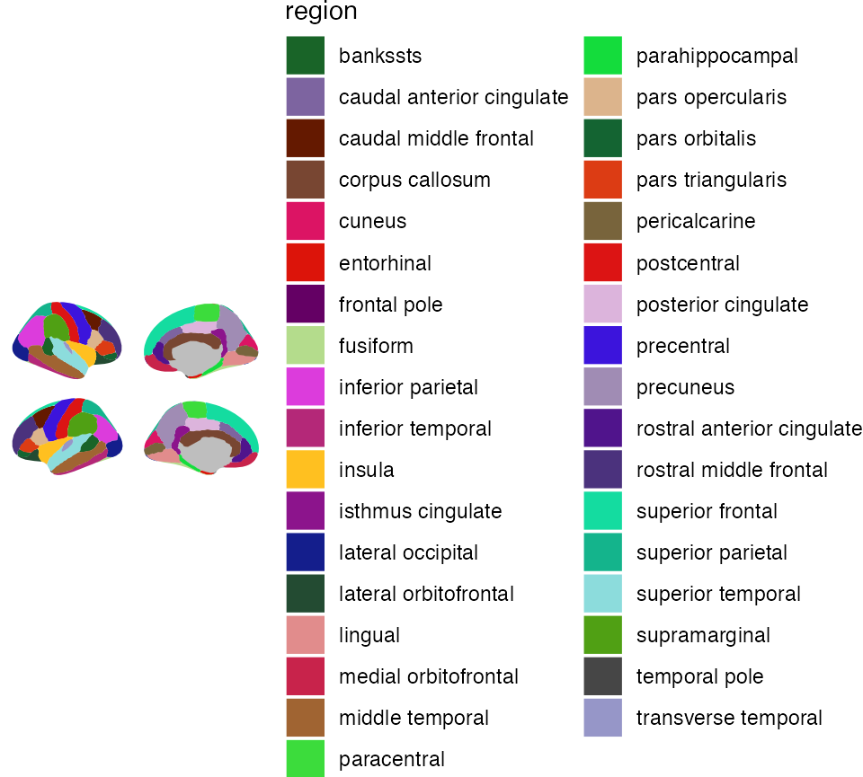
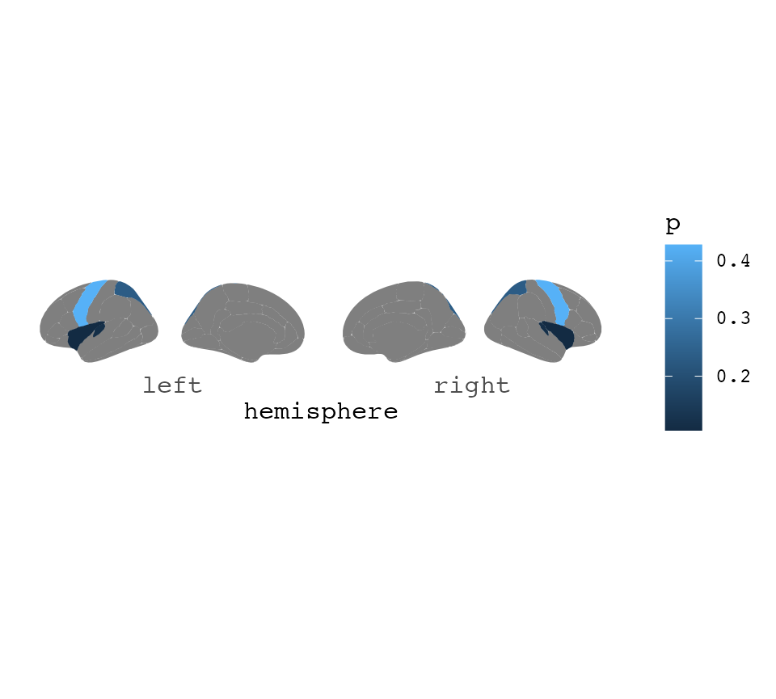
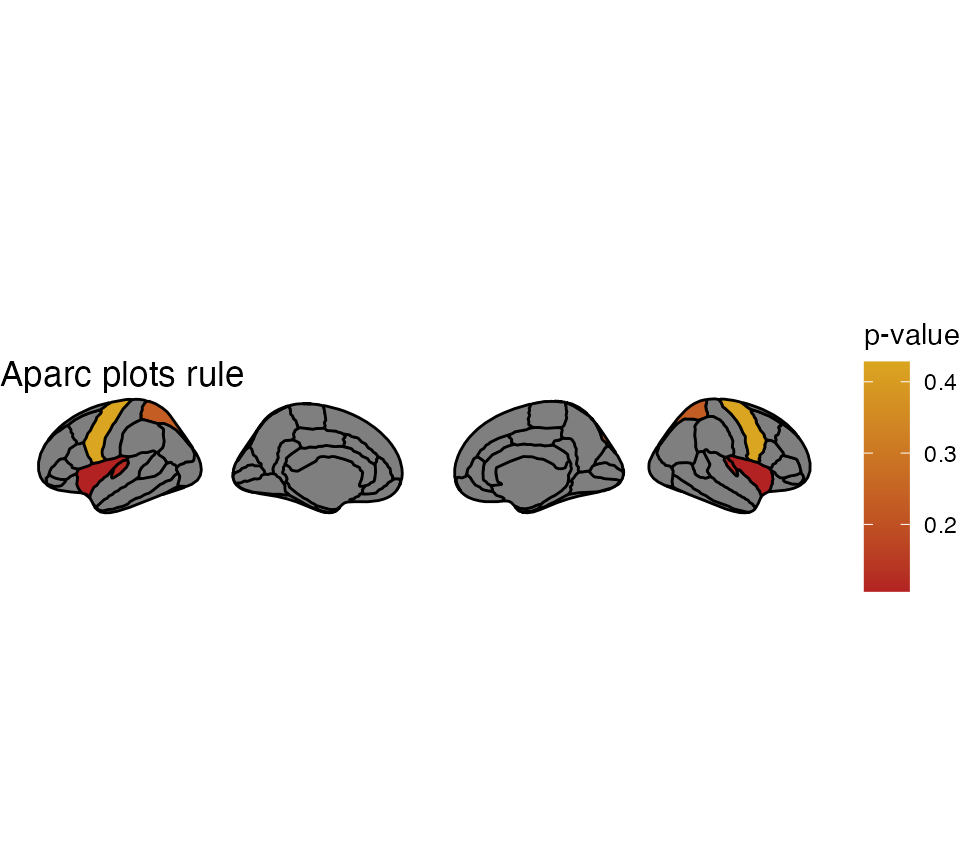
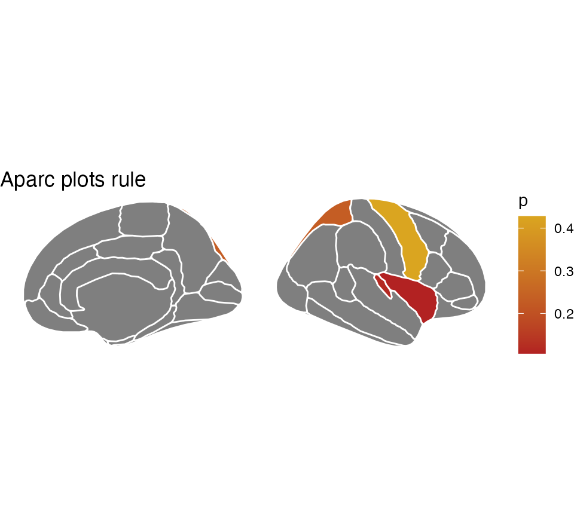
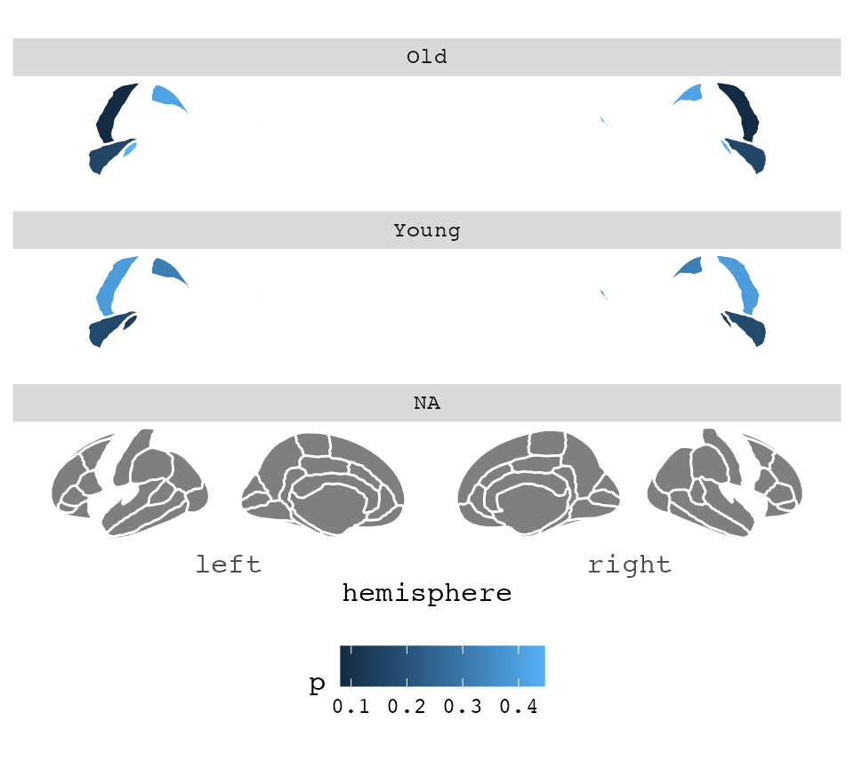
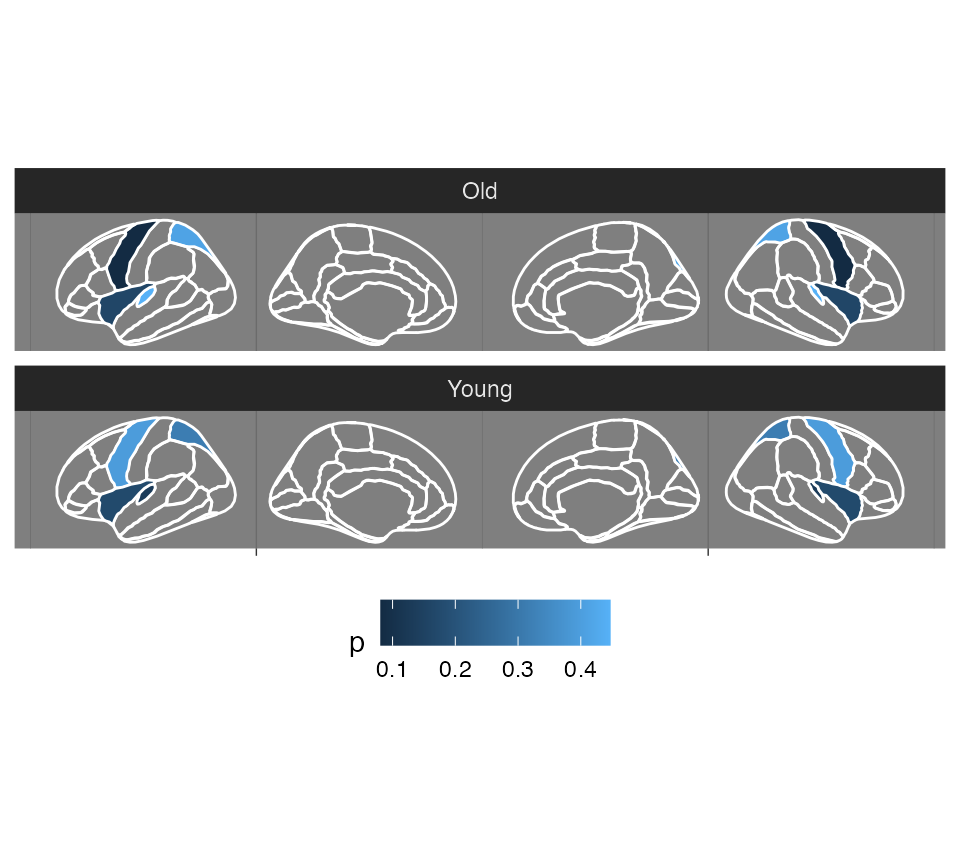
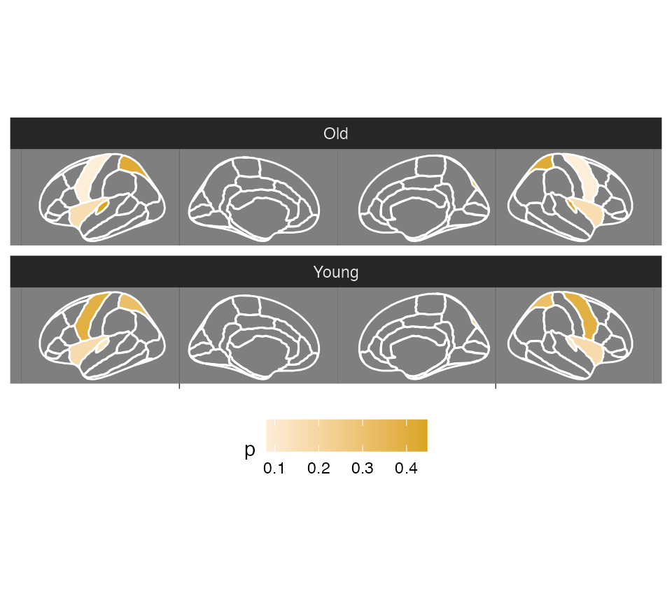
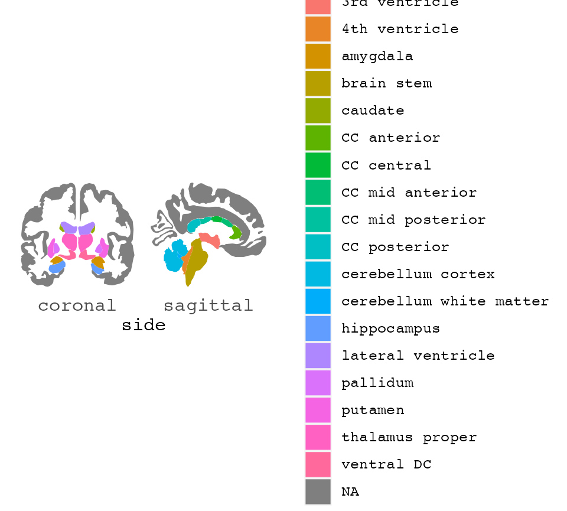

Basic use
Plotting regions from different brain atlases ggplot2 is a handy way of displaying results or grouping of aparc data.
The function ggseg(), is based in the ggplot2 format, it is recommended to get familiarized with with plotting data with ggplot2.
Out-of-the-box, ggseg() works without supplying any extra information. It will create a base plot of the aparc brain segmentations.
## Loading required package: ggplot2##
## Attaching package: 'dplyr'## The following objects are masked from 'package:stats':
##
## filter, lag## The following objects are masked from 'package:base':
##
## intersect, setdiff, setequal, union
The plot is kept as simple as possible, with as little extra information to ggplot as possible. This is done for it to be easy to extend the plot with the many ggplot options available. By default it plots data(dk). For instance, you might want to only see the brain and it’s segments, without any grid or axis information. You can add ggplot2’s theme_void to achieve this.
ggseg() + theme_void()
You can supply some extra options to ggseg, to alter the plot as you wish.
You can stack the hemispheres if you want
ggseg(position="stacked") +
theme_void()
Using fill and colour
Maybe you want each region to have a different colour. ggseg has a built column called region which you can use as fill to achieve this. Note: unlike other ggplots, before using aes you must indicate mapping=aes.
ggseg(mapping=aes(fill=region)) +
theme_void()Maybe you also want the contour lines to be black rather than white, and also a little thicker?
ggseg(colour="black", size=.7, mapping=aes(fill=region)) +
theme_void()There are built-in functions to use the colour palettes as seen in the source articles for the atlases. Using the scale_..._brain functions, these can be applied by supplying the name of the atlas as a string.
ggseg(mapping=aes(fill=region),
position = "stacked") +
scale_fill_brain("dk") +
theme_void()
You can have a look at the available palettes with:
If you want to plot the entire brain, but hightlight specific regions with colour, you will need to provide the function with some data. The data must include a column that overlaps with the columns in the atlas data. Here we create some data with 4 rows, and a region and p column. We provide the p column as the column that dictates the colour of the region. The region column matches a column in the dk atlas.
someData = data.frame(
region = c("transverse temporal", "insula",
"precentral","superior parietal"),
p = sample(seq(0,.5,.001), 4),
stringsAsFactors = FALSE)
ggseg(.data=someData, mapping=aes(fill=p))## merging atlas and data by 'region'
We can also change how this looks, by various ggplot functions
ggseg(.data=someData, colour="black", mapping=aes(fill=p)) +
theme_void() +
scale_fill_gradient(low="firebrick",high="goldenrod") +
labs(title="Aparc plots rule", fill="p-value")## merging atlas and data by 'region'
Single hemisphere results
You can also choose to only view one of the hemispheres by adding the hemisphere option
ggseg(hemisphere="right") +
theme_void()
If the results are only in one hemisphere, but you still want to plot both of them, make sure your data.fame includes the column hemi with either “rh” or “lh” for this to happen.
someData$hemi = "right"
ggseg(.data=someData, colour="white",mapping=aes(fill=p)) +
theme_void() +
scale_fill_gradient(low="firebrick",high="goldenrod") +
labs(title="Aparc plots rule")## merging atlas and data by 'region', 'hemi'You may also choose to only plot a single hemisphere, in which case using the hemisphere argument can do that for you.
someData$hemi = "right"
ggseg(.data=someData, colour="white", hemisphere = "right",
mapping=aes(fill=p)) +
theme_void() +
scale_fill_gradient(low="firebrick",high="goldenrod") +
labs(title="Aparc plots rule")## merging atlas and data by 'region', 'hemi'
Faceting
If your data has different statistics for different groups, and you want to plot them all, we can use ggplot’s facet_wrap or facet_grid for that. The data needs to be in long format for this to work, like ggplot likes it. Also, you’ll need to merge the data outside of the plotting function for it to work nicely. This is because the atlas data must be completely duplicated for plotting to look nice.
someData = data.frame(
region = rep(c("transverse temporal", "insula",
"precentral","superior parietal"),2),
p = sample(seq(0,.5,.001), 8),
AgeG = c(rep("Young",4), rep("Old",4)),
stringsAsFactors = FALSE)
ggseg(.data=someData, colour="white", mapping=aes(fill=p)) +
facet_wrap(~AgeG, ncol=1) +
theme(legend.position = "bottom")## merging atlas and data by 'region'
As you can see. The result of this faceting is not what we are after. This is because the the function requires full data to be able to plot, and the AgeG column is NA for everything outside the significant results.
To fix this, you must duplicate the atlas data, and supply your data through the atlas option. This is maybe best achieved by making your data into a list, and then list applying lapply over them, and binding them together again.
someData = someData %>%
group_by(AgeG)
ggseg(.data = someData, atlas=dk, colour="white", mapping=aes(fill=p)) +
facet_wrap(~AgeG, ncol=1) +
theme(legend.position = "bottom")## merging atlas and data by 'region'
You can read more about more complex functions like this in the vignette for external data
vignette("externalData")## Warning: vignette 'externalData' not foundWe can change how this looks quite a bit. Maybe you want it on a dark background, and the regions without any data to be transparent?
Changing the look of the plot
ggseg(.data = someData, atlas=dk, colour="white", mapping=aes(fill=p)) +
facet_wrap(~AgeG, ncol=1) +
theme_dark() +
theme(legend.position = "bottom",
axis.text = element_blank(),
axis.title = element_blank()
) +
scale_fill_continuous(na.value="transparent")## merging atlas and data by 'region'
Depending on what type of column is used for fill (continuous or discrete), you can also use the different scales to alter the colours.
ggseg(.data = someData, atlas=dk, colour="white", mapping=aes(fill=p)) +
facet_wrap(~AgeG, ncol=1) +
theme_dark() +
theme(legend.position = "bottom",
axis.text = element_blank(),
axis.title = element_blank()
) +
scale_fill_gradient2(high="goldenrod",low="firebrick",na.value="transparent")## merging atlas and data by 'region'
You can try other atlases too, and also get many more atlases is in the ggseg atlas library, ggsegExtra.
